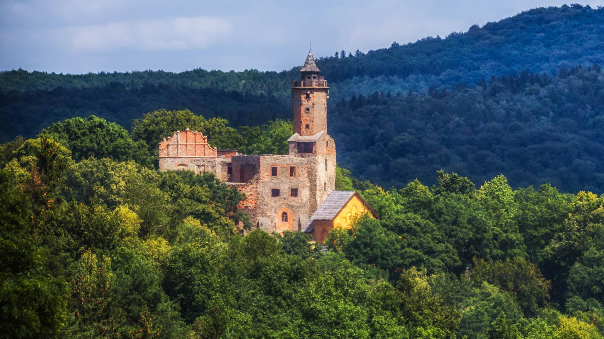
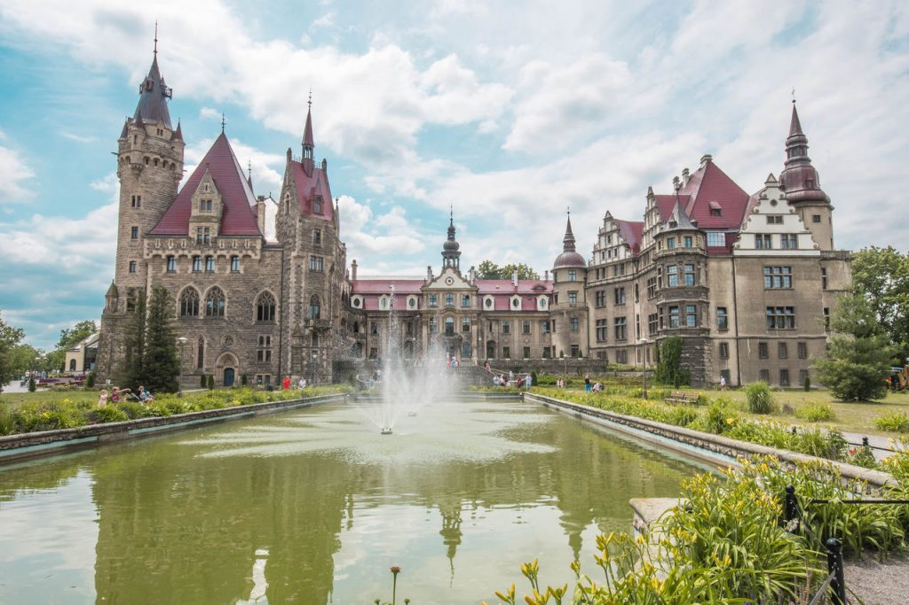

Województwo dolnośląskie – położone w południowo-zachodniej Polsce, ze stolicą we Wrocławiu. Region wyróżnia się bogatą historią, licznymi zabytkami oraz atrakcyjnymi terenami górskimi, takimi jak Sudety i Karkonosze.
Województwo opolskie – położone w południowej Polsce, ze stolicą w Opolu. Jest jednym z najmniejszych województw w kraju, znanym z wielokulturowego dziedzictwa, rozwiniętego rolnictwa oraz organizowanego corocznie Krajowego Festiwalu Polskiej Piosenki.

